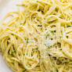

Garlic Butter Pasta

Description
Garlic butter pasta is a simple and flavorful pasta
dish made by tossing cooked pasta in a sauce of
butter, garlic, black pepper, and chilli flakes. It
takes only about 10-15 minutes to prepare and
requires very few ingredients.
Ingredients
- Pasta
- Butter
- Garlic
- Black pepper
- Salt
- Chilli flakes
Steps
- Boil water in a pot and add salt.
- Add the pasta and cook until tender.
- Save a little pasta water, then drain the pasta.
- Melt butter in a pan over low-medium heat.
- Add chopped garlic and cook for about 30-60 seconds.
- Add chilli flakes and black pepper.
- Add the cooked pasta.
- Add a small splash of the reserved pasta water.
- Toss everything together for 1-2 minutes.
Home